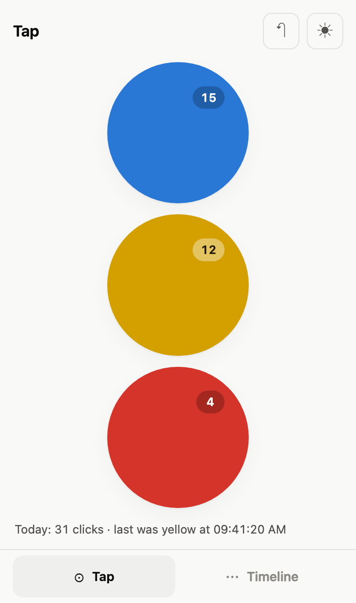
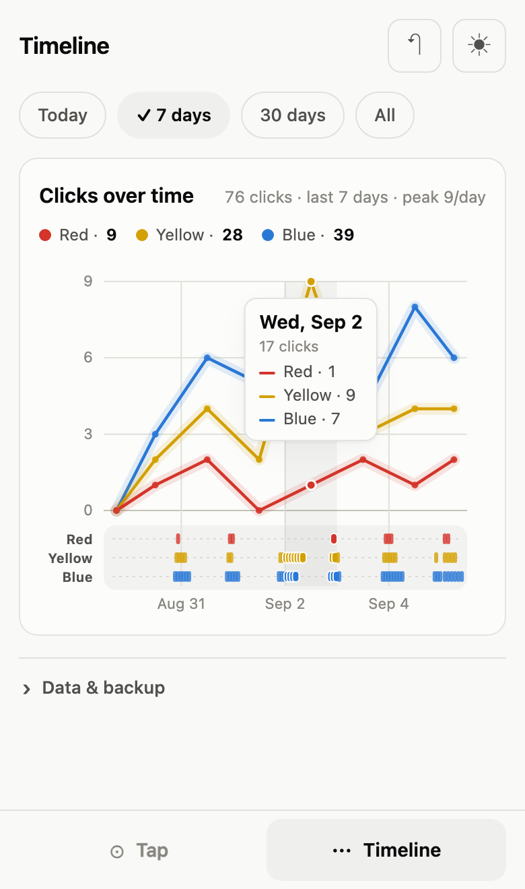

A counter for anything you can be bothered to count. Three buttons, one chart, no cloud.
Just give me the buttons →Free · No account · Works offline
Blue, yellow, red. Tap one. There is no step two.
Hour, day, week, lifetime.
Whatever that means for you.
Nobody asks what the colours are for. Coffees, cigarettes, push-ups, birds.
Add it to your home screen. Works with no signal.
Nothing leaves your device. There is no server for it to leave to.
What people count
What it looks like — try the tabs


It is a three-button counter. It will not sync, remind you, or send a year in review. If that is all you needed, it is right here.